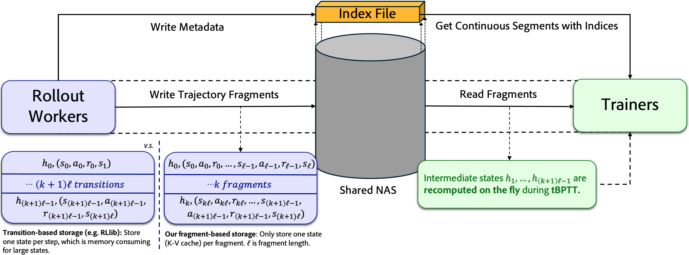

Scalable Multi-Task Reinforcement Learning for Generalizable Spatial Intelligence in Visuomotor Agents
We demonstrate that Reinforcement Learning (RL) finetuned visuomotor agents in Minecraft can achieve zero-shot generalization to unseen worlds. ROCKET-3 is built upon three key pillars:
Large-Scale Task Synthesis: We propose an innovative method for large-scale, automated synthesis of over 100,000 Minecraft training tasks.
Efficient Distributed RL Framework: We develop an efficient distributed RL framework to ensure stable training of long-sequence policies in complex environments.
Powerful Generalization: We empirically show a 4x increase in interaction success rates and compelling zero-shot generalization of spatial reasoning in diverse, unseen environments.
1Institute for Artificial Intelligence, Peking University2School of Computing, National University of Singapore
*Equal contribution
While Reinforcement Learning (RL) has achieved remarkable success in language modeling, its triumph hasn't yet fully translated to visuomotor agents. A primary challenge in RL models is their tendency to overfit specific tasks or environments, thereby hindering the acquisition of generalizable behaviors across diverse settings. This paper provides a preliminary answer to this challenge by demonstrating that RL-finetuned visuomotor agents in Minecraft can achieve zero-shot generalization to unseen worlds.
Specifically, we explore RL's potential to enhance generalizable spatial reasoning and interaction capabilities in 3D worlds. To address challenges in multi-task RL representation, we analyze and establish cross-view goal specification as a unified multi-task goal space for visuomotor policies. Furthermore, to overcome the significant bottleneck of manual task design, we propose automated task synthesis within the highly customizable Minecraft environment for large-scale multi-task RL training, and we construct an efficient distributed RL framework to support this. Experimental results show RL significantly boosts interaction success rates by 4x and enables zero-shot generalization of spatial reasoning across diverse environments, including real-world settings. Our findings underscore the immense potential of RL training in 3D simulated environments, especially those amenable to large-scale task generation, for significantly advancing visuomotor agents' spatial reasoning.
To this end, ROCKET-3 not only achieves state-of-the-art performance, but also serves as a comprehensive, open cookbook for training generalizable visuomotor agents.
We provide code,
and detailed training and evaluation recipes. We hope our release will inspire and accelerate advancements in visuomotor agents and spatial intelligence.
Minecraft Easy (1)
Minecraft Easy (2)
Minecraft Easy (3)
Minecraft Easy (4)
Minecraft Easy (5)
Minecraft Easy (6)
Minecraft Easy (7)
Minecraft Easy (8)
Minecraft Easy (9)
Minecraft Medium (1)
Minecraft Hard (1)
Minecraft Hard (2)
Minecraft Hard (3)
Minecraft Hunt
DMLab (1)
DMLab (2)
Unreal
Real World Ball (1)
Real World Ball (2)
Real World Trash
Video Gallery
Task Space for Generalizable RL
In traditional multi-task RL, a visuomotor agent learns to master a small set of \( k \) predefined tasks. The task representation in this paradigm is often a simple identifier (e.g., a one-hot vector), which lacks the semantic structure required for meaningful knowledge transfer, thus hindering generalization. Our objective is more ambitious: to enable a policy to generalize from \( k \) training tasks to \( n \gg k \) novel tasks, or even to entirely new 3D environments. Achieving this leap requires a unified task space that can seamlessly bridge training and generalization. We argue that an ideal task space must inherently satisfy four properties: Openness, Unambiguity, Scalability, and Curriculum.
We adopt Cross-View Goal Specification (CVGS) as our goal space because it naturally facilitates cross-domain generalization. The core capabilities it requires, reasoning about visual views and spatial information within the same domain, are inherently suited for this. Even if the agent can't directly see the target object, the landmark shared across the views can still offer crucial guiding information.
Property
Key Characteristics and Purpose
Openness
Refers to the diversity and infinitude of the task space. It enables agents to continuously encounter novel visual configurations, object arrangements, or interaction scenarios, preventing rote memorization. This ensures agents develop robust and generalizable visuomotor policies capable of handling unseen real-world complexities.
Unambiguity
Ensures that each task instance has clear, well-defined metrics and verifiable success criteria. For visuomotor agents, this means the goal state or action execution must be precisely measurable. Such clarity is vital for expert demonstrations in imitation learning (IL) and for designing effective reward signals during reinforcement learning (RL) fine-tuning.
Scalability
Emphasizes that the task space must facilitate the automated and large-scale generation of both demonstration data for IL pre-training and expanded task sets for RL fine-tuning. Crucially, reward functions for these tasks must be easily and efficiently designable, or verifiable without extensive human intervention.
Curriculum
A task space with curriculum properties provides a smooth transition in difficulty, offering a progressive learning path from simple to complex. It contains a spectrum where agents gradually master basic skills, with simpler tasks serving as necessary building blocks for more intricate ones, thus facilitating knowledge transfer.
Table 1: Key Properties of Effective Task Spaces for Embodied Agents.
Large-Scale Cross-View Task Synthesis
To explore whether RL can enhance spatial reasoning and enable transfer to other 3D environments, we designed an automated task synthesis method based on the Minecraft environment. We first randomly sample a spawn location \(p_0\) and generate interactive objects nearby. Subsequently, we sample a distance \(d\) (which directly influences task difficulty), teleport the player to that distance, and adjust the camera to obtain a novel goal view \(O_g\).
By accessing voxel information, we select a target object and get its bottom-center coordinate \(G=(G_x, G_y, G_z)\). Combined with the player's eye center coordinate \(U=(U_x, U_y, U_z)\), yaw \(\theta_y\), and pitch \(\theta_p\), we construct a rotation matrix \(R_M\) to represent the target in the camera coordinate system as \(C = R_M(G - U)\).
Next, using the screen dimensions, field of view, and perspective projection, we calculate the normalized device coordinates (NDC) and convert them to pixel coordinates. Since voxels are imprecise, we use the Segment Anything Model (SAM) with points sampled from the voxel cube to extract the target's pixel mask \(M_g\). Finally, we use the `spreadplayers` command to set the starting position and initial view \(O_1\). This method allows us to generate over 100,000 tasks of varying difficulty for large-scale RL training.
Foundation-to-Finesse Learning Pipeline
Our approach follows a "Foundation-to-Finesse" learning pipeline. First, we use Imitation Learning (IL) on large-scale expert trajectories to build a foundational policy with general world knowledge. Then, Reinforcement Learning (RL) is used to refine and enhance the agent's explicit reasoning and interaction capabilities through trial-and-error in the environment.
Task Formulation
We define a task instance \(\mathcal{T}\) as \(\mathcal{T} = \langle O_1, O_g, M_g, E \rangle\), where \(O_1\) is the initial agent view, \(O_g\) is the goal observation with a segmentation mask \(M_g\), and \(E\) is the interaction event (e.g., break item, use item). The policy \(\pi_\theta(A_t | O_{1:t}, \mathcal{T})\) must learn a cross-view alignment to understand the spatial relationship between its own view and the goal.
Pre-Training and Post-Training
In the pre-training stage, we use Imitation Learning to maximize the likelihood of expert actions and auxiliary predictions (e.g., target visibility and centroid).
Details of the pre-training process can be found in our paper .
For post-training, we use Reinforcement Learning to fine-tune the policy. We employ a PPO-based algorithm with a KL divergence constraint against the pre-trained policy \(\pi_{\mathrm{ref}}\) to ensure stable learning while enhancing performance.
This process refines the agent's skills without compromising the robust spatial representations learned during pre-training.
Efficient Distributed RL Framework

Figure 1: To support long-sequence training for our Transformer-based policy, we use a
memory-efficient, fragment-based storage method, which drastically reduces memory overhead compared to
traditional transition-based storage.
To handle the engineering challenges of large-scale RL in complex environments like Minecraft, we developed an efficient distributed RL framework. It features asynchronous data collection, optimized data transfer using a shared NAS to reduce network bandwidth, and a memory-efficient fragment-based storage method to support training on long-sequence data, which is crucial for our Transformer-based policies. Our framework can run 72 Minecraft instances in parallel, achieving a collection speed of about 1000 FPS.
Experiments and Results
RL Post-Training in Minecraft
We conduct post-training on about 100,000 sampled tasks within Minecraft. These tasks encompass various interaction types, including Approach, Break, Interact, and Hunt (subdivided into Melee Hunt and Archery). To facilitate curriculum learning, we implement difficulty levels based on the distance between the agent's starting position and the target. This large-scale training led to several key discoveries:
Figure 2: RL Post-Training Boosts Generalizable Spatial Reasoning and Open-World Interaction Capabilities.
(a) RL training curves show a 4x performance leap and the importance of KL-divergence for stability.
(c) Mixed-difficulty curriculum accelerates learning compared to training on hard tasks only.
(d) Our agent is the first to achieve successful multi-task RL in challenging Minecraft, outperforming SOTA baselines.
(f, g) The policy shows effective zero-shot generalization to DMLab, Unreal, and a real-world robot.
Discoveries from RL Post-Training
4x Performance Leap: The average success rate across all interaction types increased from 7% to 28%. For the difficult "Archery" task, the rate surged from <1% to 28%, indicating that RL can unlock rare capabilities from pre-training.
Stable Training with KL-Constraint: Using a KL divergence constraint with respect to the pre-trained policy was crucial for stable learning and avoiding performance collapse. Policies without pre-training failed in multi-task RL, highlighting Minecraft's complexity.
Language-Based RL's Bottleneck: Language-based models like STEVE-1 struggled, achieving near-zero performance. This highlights that natural language is insufficient for spatial reasoning with distant or occluded objects, whereas our cross-view approach provides effective guidance.
Mixed-Difficulty Curriculum: A mixed-difficulty curriculum (training on easy, medium, and hard tasks simultaneously) significantly accelerated the learning of complex skills compared to training on hard tasks alone, leading to faster convergence and higher performance.
Robustness of Reasoning: Auxiliary prediction heads for object centroid and visibility retained their performance post-RL without explicit training, indicating the robustness of the learned spatial representations and preventing overfitting.
Generalization to Unseen Worlds
To validate the generality of our method, we transferred the RL-enhanced policy to unseen 3D worlds: DMLab, an Unreal Engine environment, and a real-world robot car. These diverse environments share a common abstract action space (omnidirectional movement, camera control, and interaction), allowing for efficient policy transfer with simple mapping.
Our experiments reveal a stark contrast in performance. The pre-trained policy, while possessing foundational knowledge from its ViT backbone, showed weak generalization. It only succeeded in tasks with minimal differences between the agent's initial view and the goal view. In contrast, the RL-enhanced policy demonstrated significantly improved spatial reasoning. It successfully handled challenging scenarios, such as navigating from a first-person view when the goal was specified from a bird's-eye perspective with the target object occluded. Notably, in the real-world ball-finding task, RL boosted the success rate by up to 41%.
Figure 4: Zero-shot generalization to unseen environments. The agent successfully transfers its spatial reasoning skills to DMLab, an Unreal Engine simulation, and a real-world robot, performing tasks like fruit collection, rescue, and ball finding.
This compellingly demonstrates that the spatial intelligence honed in Minecraft can be generalized to novel environments with different visual textures and dynamics. However, we also observed limitations. The agent sometimes failed in the real world on medium-to-long-range approach tasks or by colliding with obstacles. This indicates that a "sim-to-real" gap persists, likely due to visual texture differences, underscoring the need for scaling up training with more diverse simulated worlds.
Conclusion
This work validates that reinforcement learning, when built upon a solid foundation from imitation learning, can significantly boost the cross-view spatial reasoning and interaction skills of visuomotor agents. We demonstrated that these enhanced capabilities, trained at scale using an automated task synthesis pipeline and an efficient distributed RL framework in Minecraft, successfully generalize to a variety of unseen 3D environments, including the real world. Our findings highlight the immense potential of large-scale RL in simulated worlds for advancing generalizable spatial intelligence in visuomotor agents. Future work will explore unifying RL training for 3D worlds with more diverse action spaces.
BibTeX
@misc{cai2025scalable,
title = {Scalable Multi-Task Reinforcement Learning for Generalizable Spatial Intelligence in Visuomotor Agents},
author = {Shaofei Cai and Zhancun Mu and Haiwen Xia and Bowei Zhang and Anji Liu and Yitao Liang},
year = {2025},
eprint = {2507.23698},
archiveprefix = {arXiv},
primaryclass = {cs.RO},
url = {https://arxiv.org/abs/2507.23698}
}